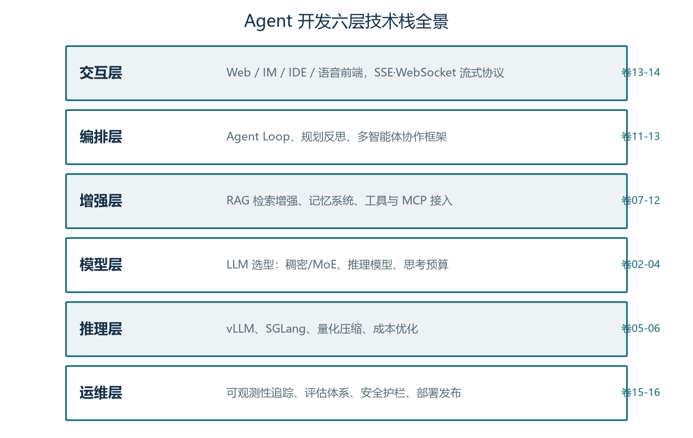
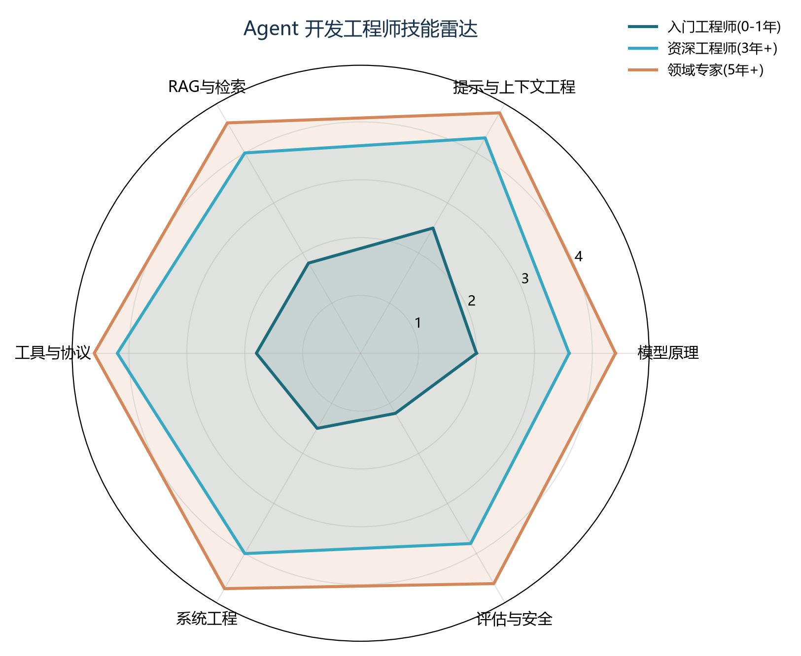

前言：这套手册怎么用
这是《Agent 开发工程师修炼手册》的导读卷。全套共十九卷正文（卷01-卷19），外加本卷导读（卷00）与术语附录（卷20），覆盖从模型原理到生产部署的完整知识链路。十九卷并非十九个孤立的专题，而是按“打地基、造器官、成系统、上战场”四个阶段精心排序的学习路径：前一卷是后一卷的地基，后一卷是前一卷的应用。建议按顺序学习，每卷投入三到五小时（含动手练习），约三到四个月可完成全程。
每卷正文采用统一结构：前言交代本卷定位与学习目标；正文四到六章，按“是什么、为什么、怎么做”展开，配图表、对比表与代码走读；卷末附小结、思考与练习、下一卷预告。各卷之间用“卷N”互相引用，读到哪里缺前置知识就回翻哪卷。目录页码可右键“更新域”刷新。
- 零基础入门者：从卷01读起，按序推进，重点做每卷练习；
- 有经验后端工程师：可先读卷01、卷07、卷08、卷10快速上手应用开发，再回头补卷02到卷06的模型层原理；
- 算法背景读者：卷02到卷06会感到亲切，可快速通过，把时间花在卷10到卷16的工程与治理部分；
- 技术管理者：重点读卷01（全景）、卷04（选型）、卷13（架构）、卷15（评估）、卷16（安全与部署），建立决策框架。
所有代码示例都可在普通笔记本上运行（调用 API 或使用开源小模型），不需要昂贵硬件。图中标注“示意”的数据仅用于说明量级与趋势，实际数值以官方文档为准。
第一章 全系列知识地图
全套手册对应 Agent 系统的六层技术栈，下图标注了每层对应的卷次。模型层与推理层（卷02到卷06）回答“模型如何工作、如何跑得快跑得省”；增强层（卷07到卷12）回答“如何给模型装上 Agent 的核心器官”；编排层与交互层（卷13、卷14）回答“如何组织成系统、如何与人及他方 Agent 对话”；运维层（卷15、卷16）回答“如何管好、防好、发好”。

十九卷的完整目录如下表所示，包括每卷的主题、回答的核心问题与学成标志。建议打印或收藏这一页，学完一卷勾掉一卷。
| 卷次 | 主题 | 回答的核心问题 |
|---|---|---|
| 卷01 | 认知篇：AI Agent 全景与工程师技能地图 | Agent 是什么、从哪来、由什么组成 |
| 卷02 | 大脑篇·上：Transformer 与注意力机制 | 模型如何阅读与思考 |
| 卷03 | 大脑篇·下：分词、嵌入与向量表示 | 文字如何变成数字、中文为什么更贵 |
| 卷04 | 选型篇：架构演进、推理模型与选型决策 | 用哪个模型、推理模型何时用 |
| 卷05 | 引擎篇：推理服务与性能优化 | 模型如何跑得又快又便宜 |
| 卷06 | 成本篇：模型量化与压缩工程 | 如何把模型装进更小的预算 |
| 卷07 | 交互篇·上：提示词工程与上下文工程 | 如何写给模型的工作说明书 |
| 卷08 | 知识篇：RAG 检索增强生成（含 LlamaIndex 框架深度） | 模型不知道的事如何补上 |
| 卷09 | 存储篇：向量数据库与检索存储选型 | 语义记忆存哪、怎么查得准 |
| 卷10 | 行动篇·上：工具调用与 MCP 协议 | 模型如何触达真实世界 |
| 卷11 | 记忆篇：记忆系统与状态持久化 | Agent 如何记住过去、续上中断 |
| 卷12 | 思维篇：规划与复杂推理 | 多步任务如何不半途而废 |
| 卷13 | 协作篇：多智能体系统与协作框架 | 一个 Agent 不够用时怎么办 |
| 卷14 | 协议篇：A2A 智能体互联与前端流式交互 | Agent 之间、Agent 与人如何对话 |
| 卷15 | 运维篇：可观测性与评估体系 | 如何知道它做得好不好 |
| 卷16 | 实战篇：安全工程与生产部署 | 如何安全送上生产线并持续迭代 |
| 卷17 | 多模态篇：多模态 Agent 与视觉语音工程化 | 如何让 Agent 看见、听懂、会说 |
| 卷18 | 成本篇·补：成本工程与 FinOps 实战 | 如何让每分 Token 预算花在刀刃上 |
| 卷19 | 实战篇·终：端到端动手项目 | 如何把整套手册串成可运行的代码 |
| 卷20 | 附录：全书术语速查与工具地图 | 记不住的名词到哪里回查 |
第二章 四阶段学习路线
第一阶段“打地基”（卷01到卷06）：目标是看懂并跑得动模型。学完你能向同事解释幻觉与上下文限制的成因，能搭建一套高性价比的推理服务，并为后续每一层的设计决策找到底层依据。这一阶段概念密度最高，请容忍暂时的“知其然”，第二阶段会反复回扣。
第二阶段“造器官”（卷07到卷12）：这是日常开发工作量最集中的阶段。提示词与上下文工程、RAG、向量库、工具与 MCP、记忆、规划——六大器官逐一装入，学完你能独立开发一个自主完成多步任务的 Agent。
第三阶段“成系统”（卷13到卷15）：从单体走向生态。多智能体协作、A2A 协议与流式前端、可观测性与评估体系，把“能跑的 Demo”升级为“可运营的系统”。
第四阶段“上战场”（卷16）：安全工程与生产部署，并以一个企业知识客服 Agent 的完整实战收束全系列。学完本阶段，你就具备了把 Agent 系统安全送上生产线并持续迭代的完整能力。

原十六卷主线之外，卷17-19 在 2026 年的知识版图上补上三条最新延伸：卷17 多模态（让 Agent 接入视觉与语音）、卷18 成本工程（FinOps 与预算治理）、卷19 端到端实战（五个递进项目把全部知识串成代码）。主线学完后，强烈建议按"卷16 → 卷17 → 卷18 → 卷19"的顺序收尾——多模态扩展感知、成本工程控制开销、实战项目验证全链路。至此整套手册构成从"懂原理"到"能上线"的完整闭环。
第三章 三条学习建议
建议一：动手优先。Agent 开发是手感活，每卷的思考与练习请在读完正文后 48 小时内完成，把示例代码改出三个变体再跑一遍，理解远比照抄深刻。建议二：建立评估习惯。从卷07 开始，你做的每一次提示词改动都应跑同一组测试用例对比效果；这个习惯将从第一天起把你与“凭感觉调参”的开发者区分开。建议三：以协议为锚。框架会过时，但 MCP、A2A 等协议与注意力、上下文预算等原理是长期资产——学习时间向它们倾斜。
最后，学习过程中遇到无法解释的现象时，优先回到本目录的图0-1：先判断现象属于哪一层，再回到对应卷次的排障章节。保持全景视角，是 Agent 工程师区别于“调参工人”的第一步。